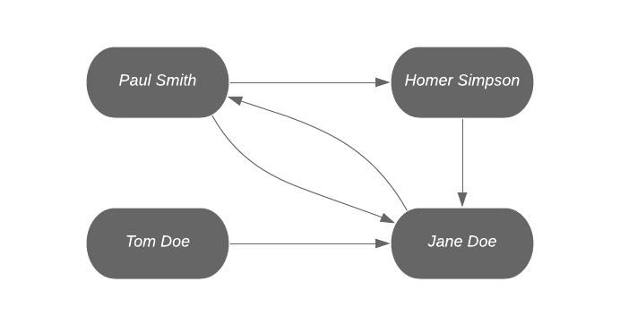
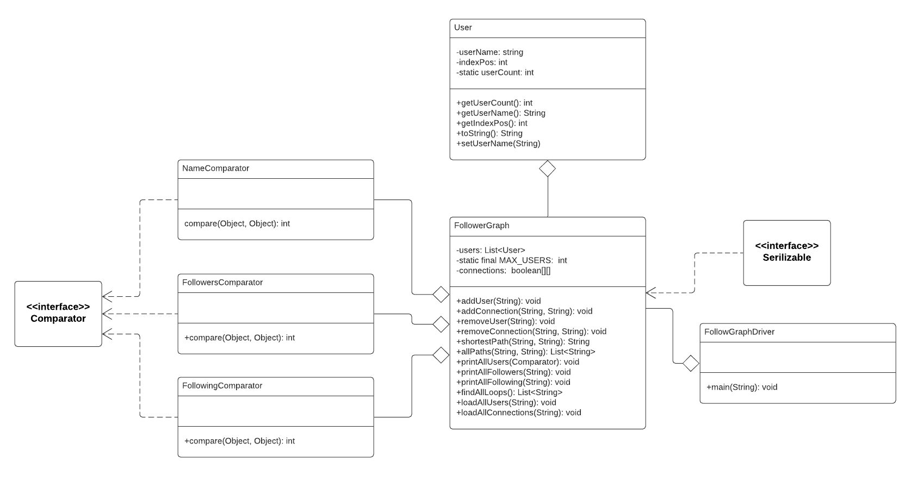

REMINDERS:
TWITTOR is a social media site that is built on top of its proprietary "Follow Graph". This Graph is composed of users, who are the vertices and follows, that are modeled as the edges. Whenever one user of the site follows someone else, an edge between the follower and the followed is established. This edge is directed from the follower to the user being followed.
Your program must be persistent.
As this assignment will involve finding minimum distances between nodes, pseudo-code for the Floyd-Warshall algorithm is included below.
Floyd-Warshall algorithm:
let dist be a |V| × |V| array of minimum distances initialized to ∞ (infinity)
let next be a |V| × |V| array of vertex indices initialized to null
procedure FloydWarshallWithPathReconstruction ()
for each edge (u,v)
dist[u][v] ← w(u,v) // the weight of the edge (u,v)
next[u][v] ← v
for k from 1 to |V| // standard Floyd-Warshall implementation
for i from 1 to |V|
for j from 1 to |V|
if dist[i][k] + dist[k][j] < dist[i][j] then
dist[i][j] ← dist[i][k] + dist[k][j]
next[i][j] ← next[i][k]
procedure Path(u, v)
if next[u][v] = null then
return []
path = [u]
while u ≠ v
u ← next[u][v]
path.append(u)
return path
NOTE: You can use Double.POSITIVE_INFINITY to represent ∞
This is the pseudo-code you might want to review before you start the assignment. More information can be found here.
users.txt - will contain 1 user's name per line.
SAMPLE:
Paul Smith
Homer Simpson
Tom Doe
Jane Doe
connections.txt - will contain 1 connection per line in the format
"srcUser, destUser" (two users' names separated by exactly 1 comma).
SAMPLE:
Paul Smith, Homer Simpson
Homer Simpson, Jane Doe
James Doe, Jane Doe
Jane Doe, Paul Smith
Paul Smith, Jane Doe
Tom Doe, Jane Doe
NOTE: The entry - James Doe, Jane Doe - should be ignored by your program since James Doe was never recorded. Continue parsing the file.


Twittor also requests you to make the graph persistent. This means that our program should save all data from session to session. When we terminate a program, normally the data will be lost. We will preserve this data by using Serializable Java API and object files. All your classes should simply implement the java.io.Serializartion interface.
Example: Your HashedLibrary class contains information for all books saved in a electronic database. You would want to preserve this data, so you can load this data the next time you run your program. You would do the following:
Modify the HashedLibrary
so that it implements the Serializable interface.
No other changes are necessary.
public class HashedLibrary implements Serializable
{
// Member methods as is
}
1. Create a User class that contains the name of the user (String), indexPos (int), and static variable userCount (int). Provide appropriate getters and setters.
HINT: every time a new User object is created (the constructor is invoked), assign indexPos of the object to be the userCount, and then increment userCount.
2. Create a FollowGraph class that contains an adjacency matrix for the users. Include the following variables:
Include the following methods:
HINT: For shortestPath(), you must return the path as well as the total number of users. You can concatenate these 2 pieces of information using a special delimiter such as "###" so you can string.split() the result when you need each piece of information.
HINT: For allPaths() and findAllLoops(), a good understanding of DFS graph traversals will be needed, additionally, you may find it useful to use auxiliary memory to simplify your task.
3. Create appropriate Comparator classes that will be used to sort your list of users. See the sample Comparable code section to get an idea of how it is used. Write the following classes:
4. Create a FollowGraphDriver class that contains the main method and the user interface. Display a menu with the following options:
5. If user enters any invalid input, for exmaple, a vertex that doesn't exist, the program should not crash. The program should print error messages to tell the user that "the vertex XXX does not exist." or "there is no path from vertex XXX to vertex YYY".
SAMPLE COMPARABLE CODE:
import java.util.*; /* * An example of type abstraction that implements Comparable * and Comparator interfaces. * * The Comparable/Comparator interfaces provide a standard means * for communication with yet unknown types of objects. */ public class CollectionsTester { public static void main(String[] args) { ArrayListstaff = new ArrayList (); staff.add(new Employee("Joe",100000, 177700010)); staff.add(new Employee("Jane",200000, 111100010)); staff.add(new Employee("Bob",66666, 1999000010)); staff.add(new Employee("Andy",77777, 188800010)); Collections.sort(staff); // Sort by salary System.out.println("Lowest paid employee: "+staff.get(0)); // Prints Bob Collections.sort(staff, new NameComparator()); // Sort by aplahabetical order System.out.println("First employee in list: "+staff.get(0)); // Prints Andy Collections.sort(staff, new IdComparator()); // Sort by ID number System.out.println("Employee with lowest ID: "+staff.get(0)); // Prints Jane } } public class Employee implements Comparable { private String name; private int salary; private int id; public Employee(String initName, int initSal, int initId) { id = initId; name = initName; salary = initSal; } public String getName(){ return name; } public int getSalary() { return salary; } public int getId(){ return id; } public void setSalary(int newSalary) { salary = newSalary; } public int compareTo(Object o) { Employee otherEmp = (Employee)o; if (this.salary == otherEmp.salary) return 0; else if (this.salary > otherEmp.salary) return 1; else return -1; } public String toString() { return name + ", $" + salary + ", "+ id; } } public class NameComparator implements Comparator { public int compare(Object o1, Object o2) { Employee e1 = (Employee) o1; Employee e2 = (Employee) o2; return (e1.getName().compareTo(e2.getName())); } } public class IdComparator implements Comparator { public int compare(Object o1, Object o2) { Employee e1 = (Employee) o1; Employee e2 = (Employee) o2; if (e1.getId() == e2.getId()) return 0; else if (e1.getId() > e2.getId()) return 1; else return -1; } }
SAMPLE INPUT/OUTPUT:
follow_graph.obj is not found. New FollowGraph object will be created.
// Comments in green, input in red, output in black
(U) Add User
(C) Add Connection
(AU) Load all Users
(AC) Load all Connections
(P) Print all Users
(L) Print all Loops
(RU) Remove User
(RC) Remove Connection
(SP) Find Shortest Path
(AP) Find All Paths
(Q) Quit
Enter a selection: AU
Enter the file name: users.txt
Paul Smith has been added
Homer Simpson has been added
Jane Doe has been added
Tom Doe has been added
Enter a selection: AC
Enter the file name: connections.txt
Paul Smith, Homer Simpson added
Homer Simpson, Jane Doe added
Jane Doe, Paul Smith added
Paul Smith, Jane Doe added
Tom Doe, Jane Doe added
Enter a selection: P
(SA) Sort Users by Name
(SB) Sort Users by Number of Followers
(SC) Sort Users by Number of Following
(Q) Quit // back to main menu
Enter a selection: SB
Users:
User Name Number of Followers Number Following
Jane Doe 3 1
Homer Simpson 1 1
Paul Smith 1 2
Tom Doe 0 1
// menu not shown in sample i/o
Enter a selection: SC
Users:
User Name Number of Followers Number Following
Paul Smith 1 2
Jane Doe 3 1
Homer Simpson 1 1
Tom Doe 0 1
// menu not shown in sample i/o
Enter a selection: Q // back to main menu
(U) Add User
(C) Add Connection
(AU) Load all Users
(AC) Load all Connections
(P) Print all Users
(L) Print all Loops
(RU) Remove User
(RC) Remove Connection
(SP) Find Shortest Path
(AP) Find All Paths
(Q) Quit
Enter a selection: L
There are 2 loops:
Paul Smith -> Homer Simpson -> Jane Doe
Paul Smith -> Jane Doe
// menu not shown in sample i/o
Enter a selection: RC
Please enter the source of the connection to remove: Jane Doe
Please enter the dest of the connection to remove: Paul Smith
class="comment">// menu not shown in sample i/o
Enter a selection: L
There are no loops.
// menu not shown in sample i/o
Enter a selection: C
Please enter the source of the connection to add: Homer Simpson
Please enter the dest of the connection to add: Tom Doe
// menu not shown in sample i/o
Enter a selection: C
Please enter the source of the connection to add: Tom Doe
Please enter the dest of the connection to add: Paul Smith
Enter a selection: L
There is 1 loop: Paul Smith -> Homer Simpson -> Tom Doe
// menu not shown in sample i/o
Enter a selection: U
Please enter the name of the user: Bart Simpson
// menu not shown in sample i/o
Enter a selection: C
Please enter the source of the connection to add: Bart Simpson
Please enter the dest of the connection to add: Homer Simpson
// menu not shown in sample i/o
Enter a selection: C
Please enter the source of the connection to add: Bart Simpson
Please enter the dest of the connection to add: Paul Smith
// menu not shown in sample i/o
Enter a selection: SP
Please enter the desired source: Bart Simpson
Please enter the desired destination: Jane Doe
Bart Simpson -> Homer Simpson -> Jane Doe
// menu not shown in sample i/o
Enter a selection: AP
Please enter the desired source: Bart Simpson
Please enter the desired destination Jane Doe
There are a total of 6 paths:
Bart Simpson -> Homer Simpson -> Jane Doe
Bart Simpson -> Homer Simpson -> Tom Doe -> Jane Doe
Bart Simpson -> Homer Simpson -> Tom Doe -> Paul Smith -> Jane Doe
Bart Simpson -> Paul Smith -> Jane Doe
Bart Simpson -> Paul Smith -> Homer Simpson -> Jane Doe
Bart Simpson -> Paul Smith -> Homer Simpson -> Tom Doe -> Jane Doe
// menu not shown in sample i/o
Enter a selection: RU
Please enter the user to remove: Tom Doe
// menu not shown in sample i/o
Enter a selection: P
(SA) Sort Users by Name
(SB) Sort Users by Number of Followers
(SC) Sort Users by Number of Following
(Q) Quit
Enter a selection: SB
Users:
User Name Number of Followers Number Following
Homer Simpson 2 1
Jane Doe 2 0
Paul Smith 1 2
Bart Simpson 0 2
// menu not shown in sample i/o
Enter a selection: Q // back to main menu
(U) Add User
(C) Add Connection
(AU) Load all Users
(AC) Load all Connections
(P) Print all Users
(L) Print all Loops
(RU) Remove User
(RC) Remove Connection
(SP) Find Shortest Path
(AP) Find All Paths
(Q) Quit
Enter a selection: Q
FollowGraph object saved into file FollowGraph.obj.
Program terminating...
Course Info | Schedule | Sections | Announcements | Homework | Exams | Help/FAQ | Grades | HOME